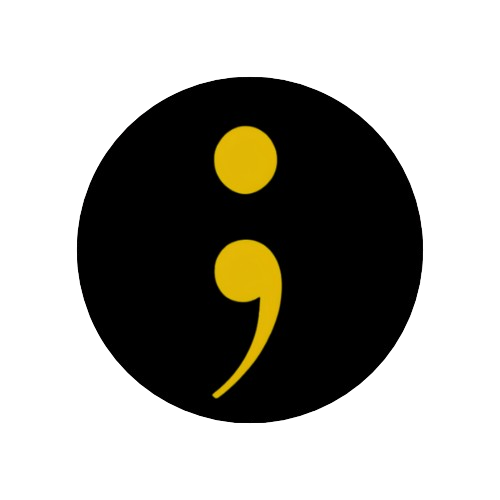

"A VIDA AS VEZES PRECISA SÓ DE UM PONTO E VIRGULA"
Compartilhe seus pensamentos de forma anônima:
Formado exclusivamente por voluntários, o CVV oferece apoio emocional e prevenção do suicídio gratuitamente. Quem nos procura, normalmente está se sentido solitário ou precisa conversar de forma sigilosa, sem julgamentos, críticas ou comparações. Atuamos nacionalmente. Nosso atendimento é realizado pelo telefone 188 (24 horas por dia e sem custo de ligação), chat, e-mail e pessoalmente em alguns endereços. O CVV é uma entidade nacional fundada em 1962, financeira e ideologicamente independente. Sem viés religioso, político-partidário ou empresarial. Você pode ainda querer saber o que mais o CVV oferece, como se tornar voluntário ou colaborar com a instituição.

Entre em contato com um profissional de saúde ou ligue para o CVV (Centro de Valorização da Vida) pelo telefone 188.